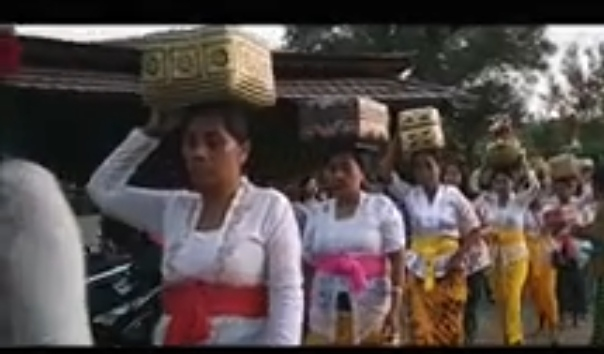
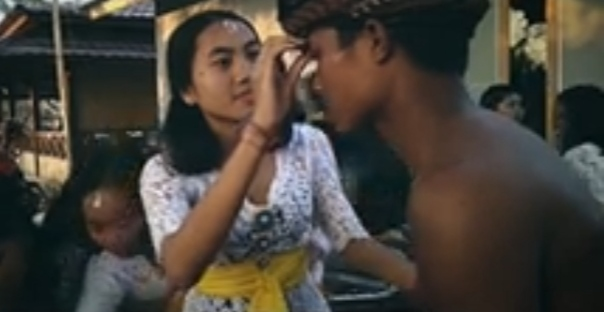
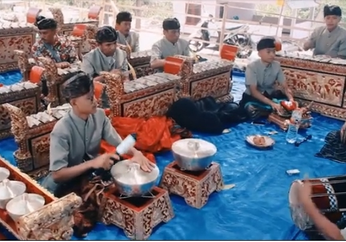

Upacara Adat Puja Wali Tebango.
pendahulan
Revitalisasi Ritual Pujawali Masyarakat Buddha di Dusun Tebango, Desa Pemenang Timur, Kecamatan Pemenang, Kabupaten Lombok Utara. upacara yang di adakan setiap satu tahun sekali oleh masyarakat tebango.
Masyarakat tebango dan dusun jeliman ireng sangat lekat dengan dua tokoh, yaitu Mas Gunung Sari dan Sang Aji demen. Diyakini kedua tokoh tersebut sebagai leluhur pertama mereka yang teleh mewariskan satu tradisi kelingan atau tulung, yang kemudian dikemas dalam upacara adat Puja Wali.
penjelasan
Acara
Dalam acara Puja Wali para masyarakat menggunakan sembek, yaitu campuran tepung beras dan air yang sampai sedikit padat dan digunakan didahi juga melangeh dan diusap ke kepala. Berikut refrensi nya

Dengan seiring berjalan acara dan pemangku memulai ritual adatnya semua orang menunggu dengan santai sambil melihat lantunan gendang blek yaang dimainkan.

Ditengah acara Puja Wali sudah mulai spiritualitas, seperti para wanita mulai kerasukan dan menari, karena sudah seperti itu harus ada yang mengawasi.
Orang-orang bersorak dan pemuda mudi laki-laki biasanya akan berpartisipasi menjadi prajurit dan membawa sebilah tombak bambu 
Diakhir acara akan diadakan sebuah pertunjukan oleh muda mudi untuk menampilkan tarian ataupun lainnya mengikuti perkembangan zaman seperti mesiat yaitu saling beradu serangan dan menangkis serangan berikut contohnnya 

Anggota

Radita Aditya
Violin Rismana
Tujuan presentasi
Tujuan
Acara Adat Puja Wali ini adalah tema yang kami pilih dari sekian acara adat di lombok atau tempat tinggal kami, kami memilih acara ini mudah dipahami dan bisa dijelaskan dengan jelas dan singkat, lalu ini juga tugas yang diberikan oleh guru bertujuan agar peserta didik lebih mengetahui asal usul budayanya dan lebih menghargai budayanya dan menumbuhkan rasa peduli pada budaya dan negara.